-
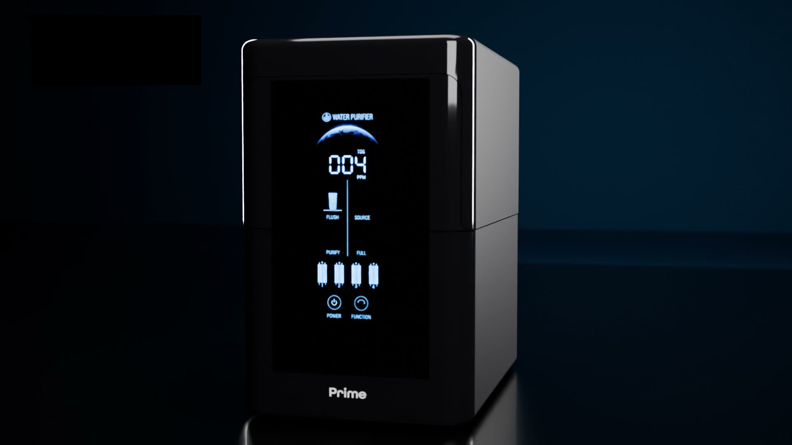
E re në Shqipëri
Prime
Filtër uji me osmozë të kundërt në 6 faza. Le ta hapim dhe ta shohim pjesë për pjesë.
1.000 €800 €- Instalimi përfshihet
- 1 vit garanci
- Në të gjithë Shqipërinë
-
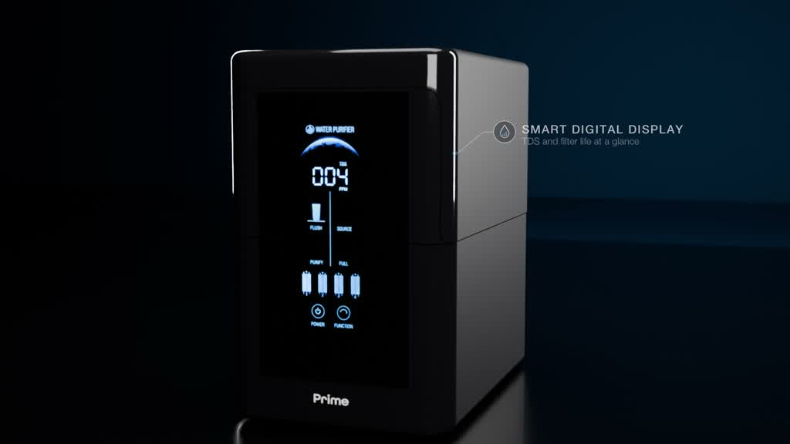
PërparaEkran dixhital
TDS · gjendja e filtraveTregon në kohë reale sa i pastër është uji (TDS, në ppm) dhe sa jetë i ka mbetur secilit filtër. Kur vjen koha e ndërrimit, ju njofton vetë.
-
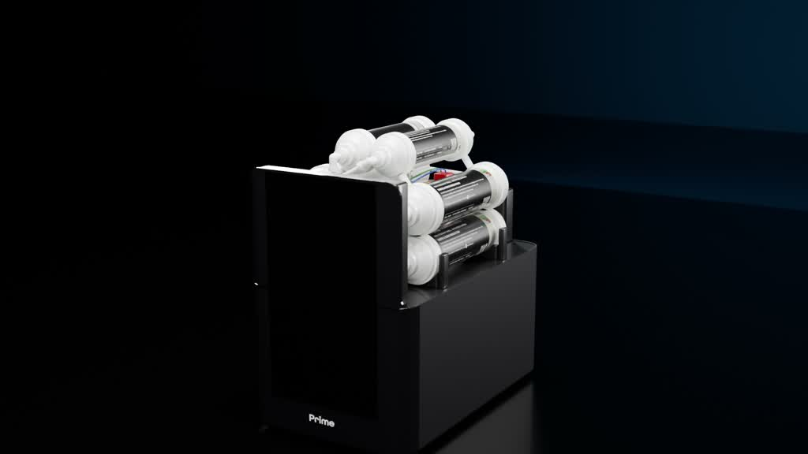
JashtëNjë trup, kompakt
Night Black · Pearl WhiteNjë kuti e vetme që zë pak vend në kuzhinë. Hiqni panelin: brenda janë gjashtë filtrat dhe pompa, të renditur me radhë.
-
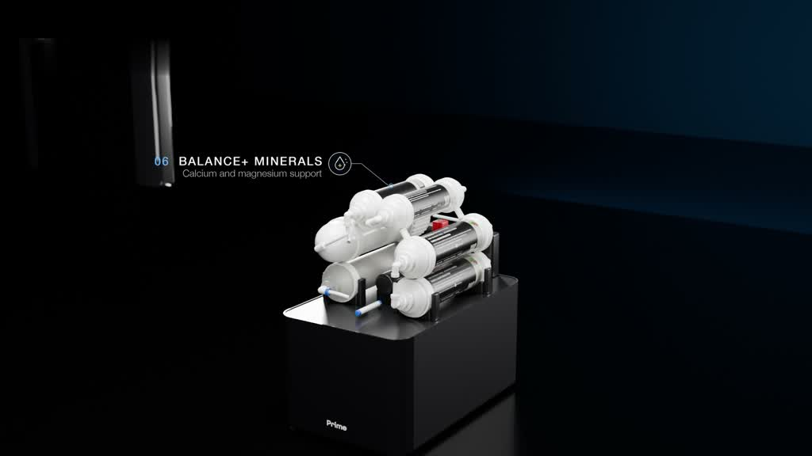
06Faza e funditBalance+ minerale
Kalcium · magnez · pHOsmoza e pastron ujin plotësisht. Kjo fazë i kthen kalciumin dhe magnezin dhe ia balancon pH-in, për shije natyrale.
-
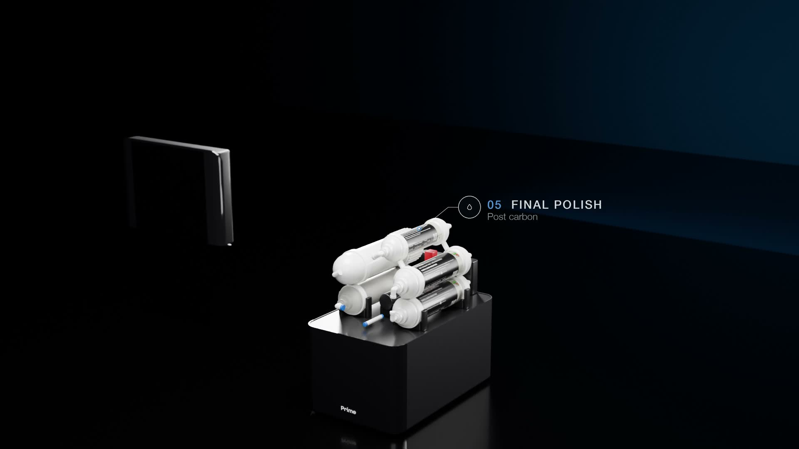
05FazaKarbon përfundimtar
Post-karbonLustrimi i fundit i shijes dhe i aromës, pak para se uji të dalë nga rubineti.
-
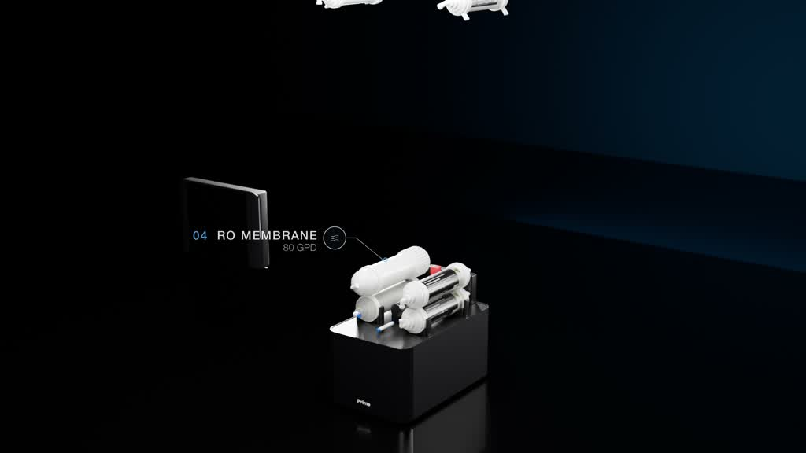
04Zemra e sistemitMembrana PALLAS™
Osmozë e kundërt · 80 GPDLë të kalojë ujin dhe ndal kripërat e tretura dhe papastërtitë më të imëta. Deri në rreth 300 litra ujë në ditë.
-
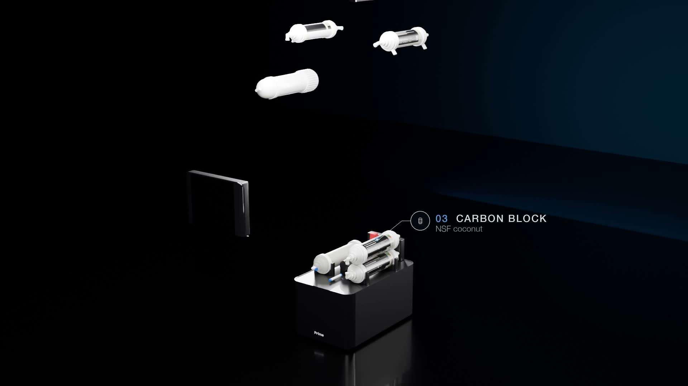
03FazaBllok karboni
Kokos · NSFKarbon i ngjeshur nga lëvozhga e kokosit. Kap klorin që ka mbetur, që të mos arrijë te membrana.
-
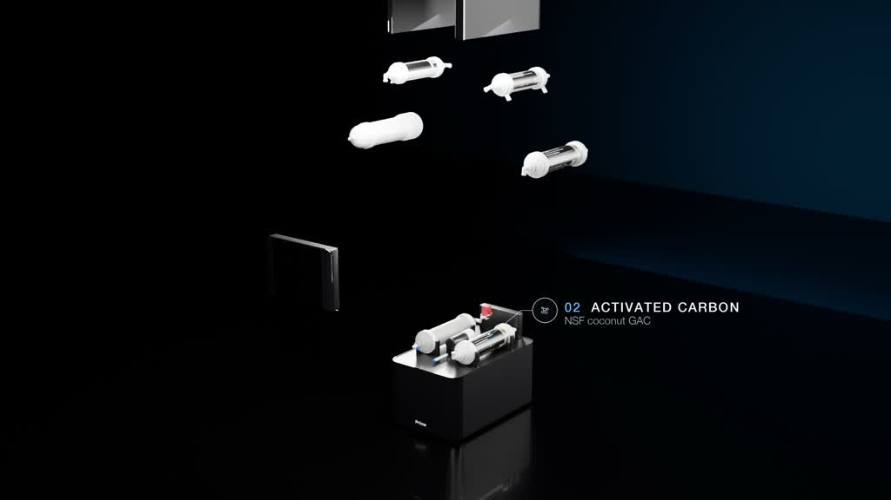
02FazaKarbon aktiv
Kokos · NSF · GACGranula karboni nga kokosi. Heq klorin, shijen dhe aromën e pakëndshme të ujit të rrjetit.
-
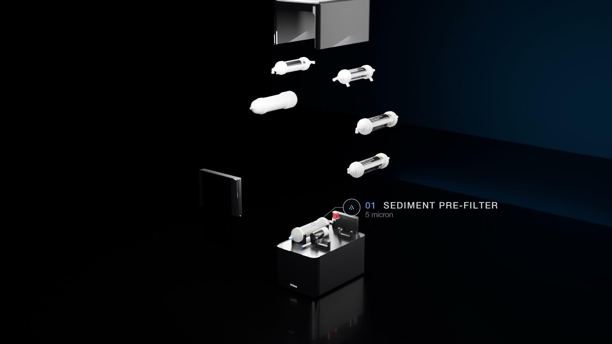
01Hyrja e ujitPara-filtër sedimenti
5 mikronKap rërën, ndryshkun dhe grimcat që vijnë nga tubat, që filtrat pas tij të zgjasin më shumë.
-
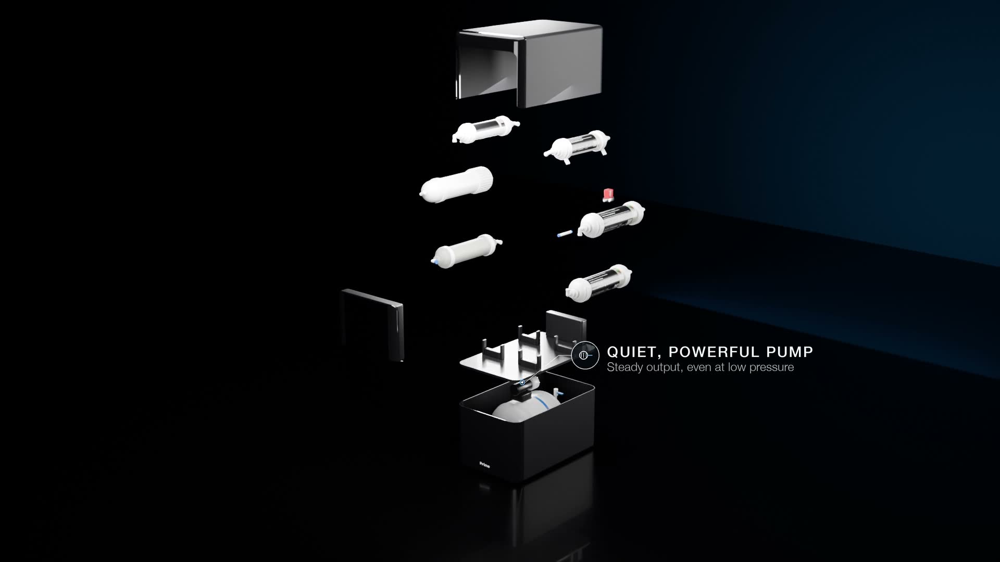
Në bazëPompë e qetë
Presion i qëndrueshëmMban rrjedhjen e njëtrajtshme edhe kur presioni i ujit në rrjet është i ulët, dhe punon pa zhurmë.
-
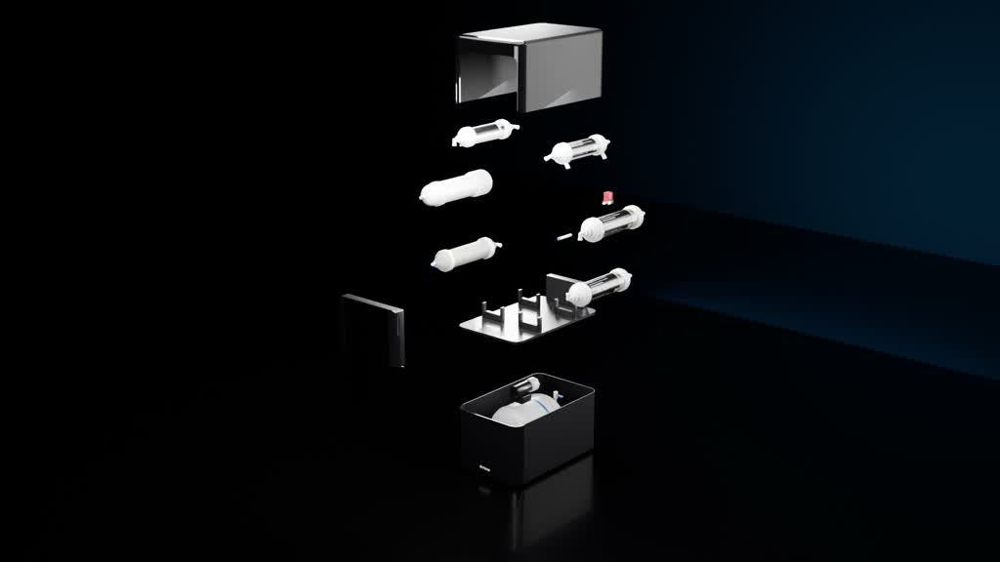
E gjithaKjo është Prime
Gjashtë faza, një pompë, një ekran. Plus mbrojtje nga rrjedhjet dhe rubinet inox. Ne e sjellim dhe e instalojmë te ju.
1.000 €800 €Porosit në WhatsApp
Ofertë prezantimi
Prime te shtëpia juaj, i instaluar
- Instalimi përfshihet në çmim
- 1 vit garanci
- Vijmë në të gjithë Shqipërinë
- Na shkruani çdo ditë, 9:00–21:00
Pyetje të shpeshta
Ajo që na pyesin më shpesh
Çmimi është në euro apo në lekë?
Në euro: 800 € në ofertë, nga 1.000 € çmimi i zakonshëm.
A paguaj veç për instalimin?
Jo. Instalimi përfshihet në 800 €.
Sa kohë është garancia?
Një vit garanci.
Në cilat qytete e instaloni?
Në të gjithë Shqipërinë. Na shkruani qytetin në WhatsApp dhe caktojmë ditën.
Si e di kur duhen ndërruar filtrat?
Ekrani tregon gjendjen e secilit filtër dhe ju njofton vetë kur vjen koha e ndërrimit.
Po nëse ka rrjedhje?
Prime ka mbrojtje nga rrjedhjet: e zbulon rrjedhjen dhe ju paralajmëron.
Kam tashmë një filtër. Çfarë ndryshon?
Prime ka 6 faza, membranë PALLAS™, Balance+ që i kthen ujit kalciumin dhe magnezin, ekran dixhital me TDS dhe mbrojtje nga rrjedhjet.
A punon me presion të ulët uji?
Po. Pompa e brendshme e ndihmon të punojë edhe me presion të ulët, brenda kufijve të pajisjes.